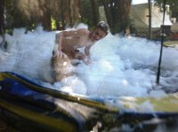

There are many varieties of camps, which I will go over in detail now. Social camps consist of many different Venture groups coming together for a weekend. These camps usually have a large variety of activities, such as horizontal bungee jumping, bubble wrestling, or snow golf.  Traditionally, these social camps have one or more dances. One example of a social camp is RoVent, held in the coastal mountains. It usually runs for around 4 days, and draws over 500 youth from groups all around.
Another type of camps are challenge camps. In some areas, Venture groups assist in the running of these camps. Challenge camps consist of a variety of stations for the Scouts (the group of scouting that is younger than Ventures) to participate in. Some Venture groups choose to volunteer at these camps by organizing one of these stations.
The other types of camps are entirely what the company chooses to organize. These may include backpacking camps, where you spend most of your time hiking to your tenting spot for the night. You have to pack well for these camps, because you have to carry everything you need on your back. Dehydrated meals are a popular choice on these types of camps, as all they require is boiling water.
My scouting group (consisting of beavers, cubs, scouts, venturers, and rovers) has an annual group camp. A picture of this camp is featured above. At this camp, the venturers provide assistance in leading the other, younger sections.
At these camps, venturers usually relax, provide service to the campsite, or assist the other leaders if it is a group camp. As venturers make their own rules, cellphones are allowed at all venturer camps, and some shenanigans are usually involved in camping. At all camps, either two or more leaders have to be present, or no leaders are present, and the venturers are on a leaderless camp.